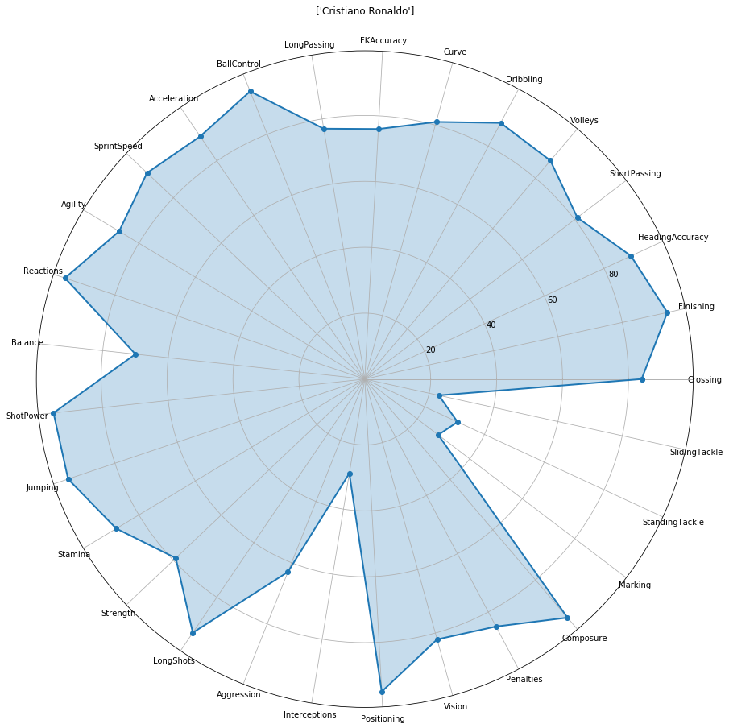

In this blog post, we are going to analyse the complete dataset from the FIFA 19 videogame, containing all the players currently playing professional football at all levels, including some fake players created by EA for future simulations. The dataset was made available by Sofifa.
We can divide the whole post into 2 segments, namely:
Feature Engineering and Analysis
Clustering
First of all let’s load the dataset into a Python notebook and see what’s inside. In my case I would be using Google Colab Notebook, because it’s relatively faster and easier to maintain datasets using Google Drive. Once we have imported the dataset, we can have a look at the first 5 rows, using the df.head() command, which shows-
This shows that there are 18207 rows, implying information about 18207 different players, encapsulated via 89 different columns, which are:
'ID', 'Name', 'Age', 'Photo', 'Nationality', 'Flag', 'Overall', 'Potential', 'Club', 'Club Logo', 'Value', 'Wage', 'Special', 'Preferred Foot', 'International Reputation', 'Weak Foot', 'Skill Moves', 'Work Rate', 'Body Type', 'Real Face', 'Position', 'Jersey Number', 'Joined', 'Loaned From', 'Contract Valid Until', 'Height', 'Weight', 'LS', 'ST', 'RS', 'LW', 'LF', 'CF', 'RF', 'RW', 'LAM', 'CAM', 'RAM', 'LM', 'LCM', 'CM', 'RCM', 'RM', 'LWB', 'LDM', 'CDM', 'RDM', 'RWB', 'LB', 'LCB', 'CB', 'RCB', 'RB', 'Crossing', 'Finishing', 'HeadingAccuracy', 'ShortPassing', 'Volleys', 'Dribbling', 'Curve', 'FKAccuracy', 'LongPassing', 'BallControl', 'Acceleration', 'SprintSpeed', 'Agility', 'Reactions', 'Balance', 'ShotPower', 'Jumping', 'Stamina', 'Strength', 'LongShots', 'Aggression', 'Interceptions', 'Positioning', 'Vision', 'Penalties', 'Composure', 'Marking', 'StandingTackle', 'SlidingTackle', 'GKDiving', 'GKHandling', 'GKKicking', 'GKPositioning', 'GKReflexes', 'Release Clause'`Now, as most players see, the Overall and Potential parameters are critical for determining a player’s performance in a game, and we can see that via a countplot. For the Overall parameter, the mean is 66.24 and the standard deviation is 6.9
And for the Potential, the mean is 71.31 and the standard deviation is 6.1-
As expected, both the primary ratings are normally distributed, with the potential graph shifted to the right. This is mainly because for most of the younger players, the potential overshoots their overall the the given moment.
Now, we can also look out for distribution of playing postions, which are listed down as follows-
'RF' 'ST' 'LW' 'GK' 'RCM' 'LF' 'RS' 'RCB' 'LCM' 'CB' 'LDM' 'CAM' 'CDM' 'LS' 'LCB' 'RM' 'LAM' 'LM' 'LB' 'RDM' 'RW' 'CM' 'RB' 'RAM' 'CF' 'RWB' 'LWB' nanAs shown above, we can also plout countplots for the same-
This shows us that there are a lot of strikers and goalkeepers in the professional league, the most sought after psoitions in football as a career, followed by centre backs and centre mids.
We can also plot a boxplot for the Age vs Overall and Age vs Value to see the trends:
The age bracket from 27 to 32 seems to be the one with the highest average overall rating, the median at 31 seems to be the greatest, primarily because of Lionel Messi!
Now the Value vs Age plot is highly skewed, due to very less individuals in the game who actually earn that amount of money. Instead we can see the same plot for the top 1000 players sorted on the basis of their overall rating
Apart from these plots, some of the most popular ones are the radar plots, primarily brought into the picture of football statistics by the company StatsBomb. Among all the parameters we wish to examine the following features in a player-
'Crossing',
'Finishing', 'HeadingAccuracy', 'ShortPassing', 'Volleys', 'Dribbling',
'Curve', 'FKAccuracy', 'LongPassing', 'BallControl', 'Acceleration',
'SprintSpeed', 'Agility', 'Reactions', 'Balance', 'ShotPower',
'Jumping', 'Stamina', 'Strength', 'LongShots', 'Aggression',
'Interceptions', 'Positioning', 'Vision', 'Penalties', 'Composure',
'Marking', 'StandingTackle', 'SlidingTackle'
And as an example we can have the plots for arguably the 2 best players in the world, Messi and Ronaldo.

As seen from the plot, Messi seems to be better in Free Kicks, Dribbling, Short Passing, Vision Balance, Shot Power and many more, whereas Ronaldo is better in Strength, Stamina, Reactions, Sprint Speed, Long Passing, Heading Accuracy and more.
We see that the two columns of wage and value are in string format with currency symbols present. We can convert them into numerical data using the following code snippet:
wagenum = []
valuenum = []
for i in range(data.shape[0]):
wage = data['Wage'][i]
value = data['Value'][i]
if wage[-1] == 'K':
wage = float(wage[1:-1])*1000
else:
wage = float(wage[1:])
if value[-1] == 'M':
value = float(value[1:-1])*1000000
elif value[-1] == 'K':
value = float(value[1:-1])*1000
else:
value = float(value[1:])*1000
wagenum.append(wage)
valuenum.append(value)
data['WageNum'] = wagenum
data['ValueNum'] = valuenum
data = data.drop(['Value', 'Wage'], axis=1)This creates two new columns, WageNum and ValueNum in numerical format.
In the further columns, we see that positional skill numbers have a + sign, indicating an upper limit of strength in that position, for that player. So, that value is a string and we wish to convert them into an integer for further use. The code below, converts it to integers;
count = 0
for i in range(data.shape[0]):
for j in range(data.shape[1]):
if data.columns[j] in ('LS', 'ST', 'RS', 'LW', 'LF', 'CF', 'RF', 'RW',
'LAM', 'CAM', 'RAM', 'LM', 'LCM', 'CM', 'RCM', 'RM', 'LWB', 'LDM',
'CDM', 'RDM', 'RWB', 'LB', 'LCB', 'CB', 'RCB', 'RB'):
value = data.iloc[i][j]
if isinstance(value, str):
if "+" in value:
num1 = int(value[:value.index("+")])
num2 = int(value[value.index("+")+1:])
result = num1+num2
data.iat[i, j] = result
count+=1
print("Elements changed: ", count)As we run it we see, that 419172 cell values get changed.
Apart from this, we would also like to focus on data inputing for missing values. For some selected parameters we can run the following snippet:
data['ShortPassing'].fillna(data['ShortPassing'].mean(), inplace = True)
data['Volleys'].fillna(data['Volleys'].mean(), inplace = True)
data['Dribbling'].fillna(data['Dribbling'].mean(), inplace = True)
data['Curve'].fillna(data['Curve'].mean(), inplace = True)
data['FKAccuracy'].fillna(data['FKAccuracy'], inplace = True)
data['LongPassing'].fillna(data['LongPassing'].mean(), inplace = True)
data['BallControl'].fillna(data['BallControl'].mean(), inplace = True)
data['HeadingAccuracy'].fillna(data['HeadingAccuracy'].mean(), inplace = True)
data['Finishing'].fillna(data['Finishing'].mean(), inplace = True)
data['Crossing'].fillna(data['Crossing'].mean(), inplace = True)And for the remaining numeric columns, the unavailabe data refers to the players who are not evaluated on the parameters, for example a goalkeeper being tested how well can he perform if played as a striker. So we fill those columns with 0
data.fillna(0, inplace = True)
This concludes the Part 1 of the analysis, in the next part we use clustering to analyse similar players of a particular position/skill, to identify value for money options for replacing a player.
Thanks for reading! Link for part 2.